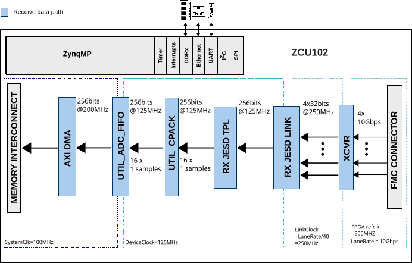
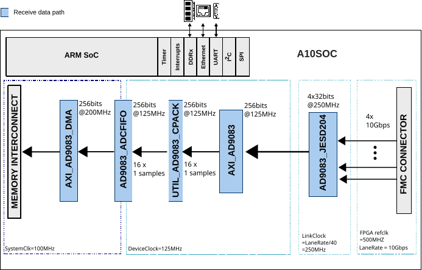
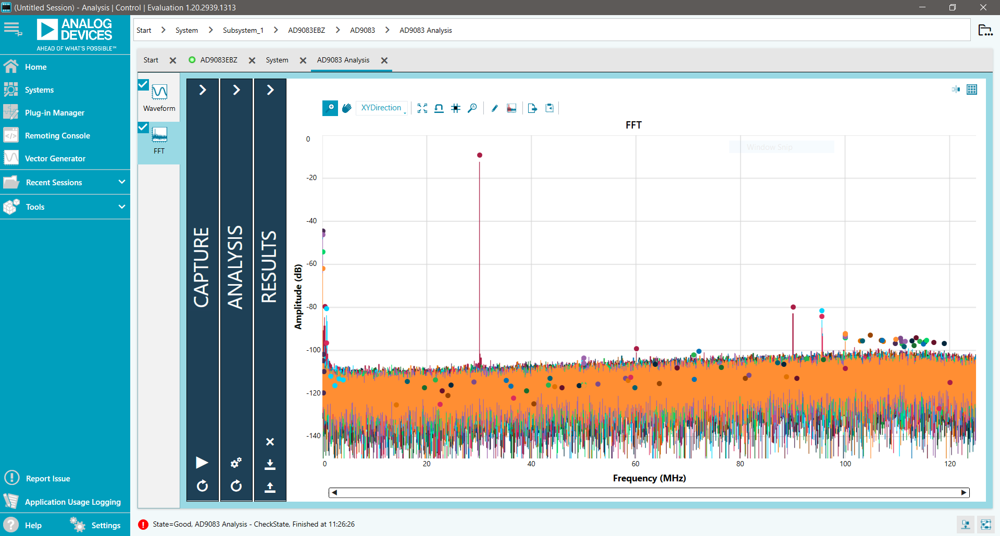
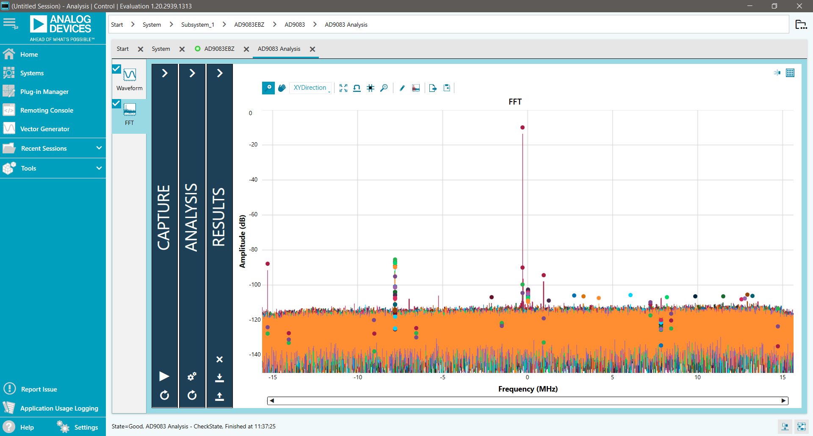
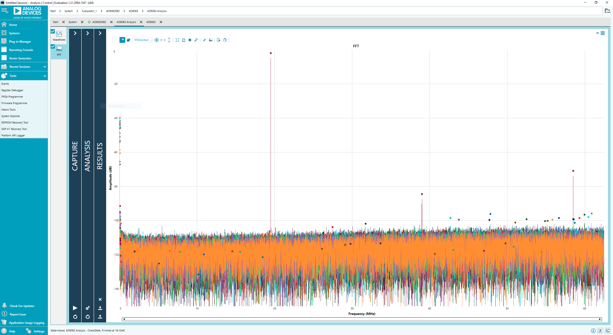

AD9083-EVB User Guide
Introduction
The AD9083 is a 16-bit, 16-channel with 125 MHz bandwidth per channel (2 GSPS total) analog-to-digital converter (ADC) featuring an on-chip programmable, single-pole antialiasing filter and termination resistor that is designed for low power, small size, and ease of use.
The dual ADC cores feature a multistage, differential pipelined architecture with integrated output error correction logic. Each ADC features wide bandwidth inputs supporting a variety of user-selectable input ranges.
Supported Devices
Supported Carriers
Board |
HDL |
Linux |
|---|---|---|
Yes |
Yes |
|
Yes |
Yes |
HDL Reference Design
The AD9083_EVB reference design is a processor-based embedded system. The design consists of a receive chain that transports captured samples from the ADC to the system memory (DDR). Before transferring the data to DDR, the samples are stored in a buffer implemented on block RAMs from the FPGA fabric.
The link operates with the following parameters:
Deframer: L=4, M=16, F=8, S=1, N’=16
JESD204B Lane Rate: 10 Gbps
ADC Clock: 2000 MHz
JESD204B Subclass 0
Block Diagrams


HDL Source Code
Software Support
Linux Driver
The AD9083 is a 16-channel, 125 MHz bandwidth, continuous time sigma-delta (CTSD) ADC. The 16 ADC cores feature a first-order CTSD modulator architecture with integrated background nonlinearity correction logic and self-cancelling dither. Each ADC has a signal processing tile containing a cascaded integrator comb (CIC) filter, a quadrature digital downconverter (DDC) with multiple FIR decimation filters, or up to three quadrature DDC channels with averaging decimation filters for data gating applications.
Users can configure the Subclass 1 JESD204B based high-speed serialized output in a variety of lane configurations (up to four), depending on the DDC configuration and the acceptable lane rate of the receiving logic device.
The AD9083 Linux IIO driver depends on SPI.
Kernel configuration (make menuconfig):
Device Drivers --->
<*> Industrial I/O support --->
--- Industrial I/O support
-*- Enable ring buffer support within IIO
-*- Industrial I/O lock free software ring
-*- Enable triggered sampling support
*** Direct Digital Synthesis ***
[--snip--]
<*> Analog Devices CoreFPGA AXI DDS driver
<*> Analog Devices AD9083 16-Channel, 125 MHz Bandwidth, JESD204B ADC
[--snip--]
Driver and device tree source files:
drivers/iio/adc/ad9083 (API driver)
arch/arm64/boot/dts/xilinx/zynqmp-zcu102-rev10-ad9083-fmc-ebz.dts
Related driver files:
No-OS Project
Evaluation Using the ADS8-V3EBZ Capture Board
The AD9083EBZ evaluation board is evaluated using the ADS8-V3EBZ FPGA-based data capture board and the ACE software.

Figure 3 AD9083EBZ evaluation board and ADS8-V3EBZ data capture board
Equipment Needed
Hardware
AD9083EBZ evaluation board
ADS8-V3EBZ high-speed carrier card
High quality analog signal source
Bandpass filter for the analog signal source
PC running Windows with admin privileges and an available Ethernet and USB port
Note
The AD9083 PLL reference clock, FPGA reference clock, and FPGA global clock are provided by the on-board AD9528 JESD204B clock generator.
Software
Helpful Documents
Board Design and Integration Files
Schematics:
02_059760b.pdfLayout files:
ad9083ebz_revc.zipBill of materials:
05-059760-01-c.zip
These files can be obtained by contacting Analog Devices Sales.
MicroZed Setup
Before evaluating the AD9083, the Ethernet interface to the MicroZed board on the ADS8-V3EBZ must be configured.
MicroSD Card Installation
Locate the microSD card labeled
ADS8-HSxfrom the ADS8-V3EBZ packaging.Connect the microSD card to the MicroZed board (contacts facing up).
Verify that the MicroZed board is seated properly on the ADS8-V3EBZ.

Network Interface Configuration
Ensure the connections to the ADS8-V3EBZ are as shown in the setup figure above. It is not necessary to connect the AD9083EBZ evaluation board at this stage.
Connect one end of an Ethernet cable directly to the PC Ethernet port (or a USB-to-Ethernet adapter) and the other end to the MicroZed board.
Power on the ADS8-V3EBZ board. Allow up to 10 seconds for the MicroZed board to boot.
Open the local area connection settings:
Windows 7: Start Menu > Control Panel > Network and Sharing Center > Change adapter settings
Windows 10: Start Menu > Settings > Network & Internet > Change adapter options
If the Local Area Connection icon does not appear, disconnect and reconnect the Ethernet cable to the MicroZed board.
Double-click the Local Area Connection icon.
Click Properties, select Internet Protocol Version 4 (TCP/IPv4), and click Properties.
Enter
192.168.0.1in the IP address field and ensure the subnet mask is255.255.255.0.Click OK.
ACE Plugin Installation
Download and install the ACE software from the ACE web page. After installation, install the AD9083 evaluation board plugin using one of the following methods.
Installation from ACE
Open ACE from the Start menu: All Programs > Analog Devices > ACE.
In the left pane, click Plug-in Manager to open the Manage Plug-ins window.
Click the Available Packages dropdown menu.
Enter
AD9083in the search bar to find the appropriate board plugin.Select the AD9083 plugin and click Install Selected.
Click Close.

Installation from the Web
Ensure that the ACE software is installed.
On the ACE web page, navigate to the ACE Evaluation Board Plug-ins section and search for
AD9083.Click the AD9083 board plugin to download it.
Note
If using Internet Explorer, the downloaded file extension may be
.zip. Right-click the file and rename the extension to.acezip.Double-click the
.acezipfile to automatically install the plugin.Close ACE after the plugin installation completes.
AD9083 Plugin Overview
The AD9083 plugin allows the user to evaluate the AD9083 via the AD9083EBZ evaluation board. The AD9083EBZ provides the power and clocking necessary to evaluate the 16-channel ADC. The power delivery network is powered by a LTM8074 1.2A Silent Switcher uModule Regulator, and clocking is provided by an AD9528 JESD204B clock generator with an on-board 100 MHz VCXO reference.
The plugin configures the AD9083 using the API. Commands are generated by the plugin, downloaded to the MicroZed, which in turn configures the AD9083. The plugin also configures the AD9528 using the clocking requirements from the Startup Wizard.
To begin, ensure the board is connected as shown in the setup figure and that the ADS8-V3EBZ board is powered on before opening ACE. The plugin appears in the Attached Hardware section of the ACE GUI.

Board View
Double-clicking the board icon in the Attached Hardware section opens the AD9083EBZ board view. The board view enables quick setup of the AD9083 using the STARTUP WIZARD pane. It may take several moments for the board view to initialize.

Chip View
Double-clicking the AD9083 icon in the board view opens the chip view. The chip view enables customization of the AD9083 beyond the functions available in the board view.

Evaluation Examples
The AD9083 can be configured in many different modes. The following sections provide examples of several configurations.
Wide Bandwidth Real Output Mode
Parameter |
Value |
|---|---|
Sample rate |
2 GSPS |
On-chip PLL reference |
250 MHz (from on-board AD9528) |
fINMAX |
100 MHz (sample rate / 20) |
fC |
800 MHz |
VMAX |
2.0 V |
RTERM |
100 Ohm |
EN_HP |
0 |
Backoff |
0 |
CIC decimator |
Bypass |
Use mixer |
No |
Decimate by J |
8 |
Transport (L, M, F, S, N’, K) |
4, 16, 6, 1, 12, 32 |
Lane configuration |
4 lanes at 15 Gbps each |
To run this configuration:
Configure the AD9083 and AD9528 using the AD9083EBZ Startup Wizard with the parameters listed above.
Click Apply. Allow several moments for the configuration to complete.
Navigate to Analysis.
Click Run Once.

Figure 9 AD9083EBZ Wide Bandwidth Real Output Mode typical FFT
Narrow Bandwidth Complex Output Mode
This configuration is suitable for applications such as phased-array radar. The output bandwidth is +/- 12.7187 MHz. This example uses an analog input frequency of 70.5 MHz and an NCO frequency of 70.3125 MHz.
Parameter |
Value |
|---|---|
Sample rate |
2 GSPS |
On-chip PLL reference |
250 MHz (from on-board AD9528) |
fINMAX |
100 MHz (sample rate / 20) |
fC |
800 MHz |
VMAX |
2.0 V |
RTERM |
100 Ohm |
EN_HP |
0 |
Backoff |
0 |
NCO0/mixer (complex data), FTW |
70.3125 MHz |
CIC decimator |
4 |
Decimate by J |
16 |
Transport (L, M, F, S, N’, K) |
2, 32, 32, 1, 16, 32 |
Lane configuration |
2 lanes at 10 Gbps each |
To run this configuration:
Configure the AD9083 and AD9528 using the AD9083EBZ Startup Wizard with the parameters listed above.
Click Apply. Allow several moments for the configuration to complete.
Navigate to Analysis.
Click Run Once.

Figure 10 AD9083EBZ Narrow Bandwidth Complex Output Mode typical FFT
Precision Time Domain Mode
Parameter |
Value |
|---|---|
Sample rate |
1 GSPS |
On-chip PLL reference |
125 MHz (from on-board AD9528) |
VMAX |
1.8 V |
RTERM |
100 Ohm |
fC |
800 MHz |
High Performance Mode |
False |
Fin Max |
50 MHz (sample rate / 20) |
Backoff |
0 |
ADC Channels |
16 |
Bypass CIC |
False |
CIC decimator |
8 |
Use Mixer |
False |
Decimate by J |
Bypass (Decimate by 1) |
jtx_subclasv_cfg |
0 |
Lanes (L) |
3 |
Virtual Converters (M) |
16 |
Octets/Frame per Lane (F) |
8 |
Bits Packed (NP) |
12 |
Resolution Bits (N) |
12 |
Frames in a multi-frame (K) |
32 |
Lane configuration |
3 lanes at 10 Gbps each |
To run this configuration:
Configure the AD9083 and AD9528 using the AD9083EBZ Startup Wizard with the parameters listed above.
Click Apply. Allow several moments for the configuration to complete.
Navigate to Analysis.
Click Run Once.

External Trigger
SMA connector J2 on the ADS8-V3EBZ can be used as an optional trigger to control the data capture start time. The trigger requires a 1.8 V active-high pulse width longer than one period of the FPGA internal peripheral clock (50 MHz).
To enable the external trigger:
Click Navigate to FPGA SPI on the block diagram of the AD9083 chip view.

Click the + sign next to Address (Hex)
0x0106.
Click the 0 on the same row as
ext_trig_en. The value changes to 1.
Click Apply Changes.

SMA connector J3 is normally used as a system ready indicator, signaling that the FPGA is ready to accept an external trigger. To capture data, click Run Once as normal. Capture begins when a 1.8 V pulse is detected on connector J2 of the ADS8-V3EBZ.
Troubleshooting
Board Not Functioning Properly
A board component may have been rendered inoperable by ESD, removing a jumper during powered operation, accidental shorting while probing, or similar causes. Check the supply domain voltages on the power adapter board while powered:
Domain |
Test Point |
Approx. Voltage |
|---|---|---|
12V_IN |
TP19 |
12 V |
V1P0V |
TP6 |
1.0 V |
V1P8V |
TP14 |
1.8 V |
No SPI Communication with ADS8-V3EBZ
Ensure the USB cable has a good connection on both the ADS8-V3EBZ board and the PC. Try another USB port if needed; some PCs work best with a USB 3.0 port.
The ADS8-V3EBZ should appear in the PC Device Manager.
Verify that the FPGA on the ADS8-V3EBZ has been programmed. A lit
FPGA_DONELED (DS15) on the top of the ADS8-V3EBZ and a powered fan are good indicators.Check the common-mode voltage on the JESD204B traces. On the evaluation board, the common-mode voltage should be approximately 0.5 V. On the ADS8-V3EBZ, it should be around 0.8 V.
To test SPI operation, read and write to register
0x000A(Scratch Pad Register) using the ACE Register Debugger. If the register reads back the same value written to it, SPI is operational.All registers reading back as
0xFFor0x00may indicate no SPI communication.Register
0x0000(SPI Configuration A) reading back0x81may indicate the FPGA on the ADS8-V3EBZ has not been programmed.
Board Fails to Capture Data
Ensure the board is functioning properly and SPI communication is successful (see previous troubleshooting tips).
Check the signal generator input on connector J20. Using SPI, read the on-chip PLL Lock Detect register
0xD44to verify the PLL is locked. Place a differential oscilloscope probe on the clock pins to confirm the clock signal reaches the chip.Check the JESD204B PLL Locked indicator or register
0x301F(PLL Status). If the indicator in the plugin chip view is green, or if the register reads back0x80, the PLL is locked. If it is not locked:Restart the evaluation board setup (power-cycle the FPGA, start a new session in ACE) by following the instructions from the beginning.
Ensure that P3 (Power Down / Standby jumper) is not jumped.
More Information
Support
Analog Devices will provide limited online support for anyone using the reference design with Analog Devices components via the FPGA Reference Designs Forum.